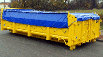
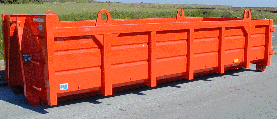
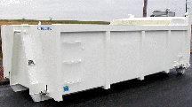
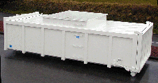
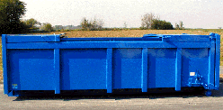
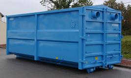

Groupe Delaplace & Munier Industries
La Garantie d'une Marque et Modèles déposés.®


Benne fermée type TNR 10 m³ à enrobés avec Bâchage coulissant sur câbles

Benne ouverte type TNR 15 m³
avec oreilles pour levage au pont

Benne ouverte type TLR 18 m³ à boues
avec grille filtrante amovible sur l'avant et
Déflecteurs arrière
BENNES SPECIALES

Benne étanche type TLRS 15 m³
avec Toit Fixe pour Pulpes de légumes

Benne fermée type TLR 15 m³
avec Toit Coulissant à ouverture centrale

Benne à sciures et Copeaux de bois type Eurostyl' 30 m³ pour remplissage par soufflerie